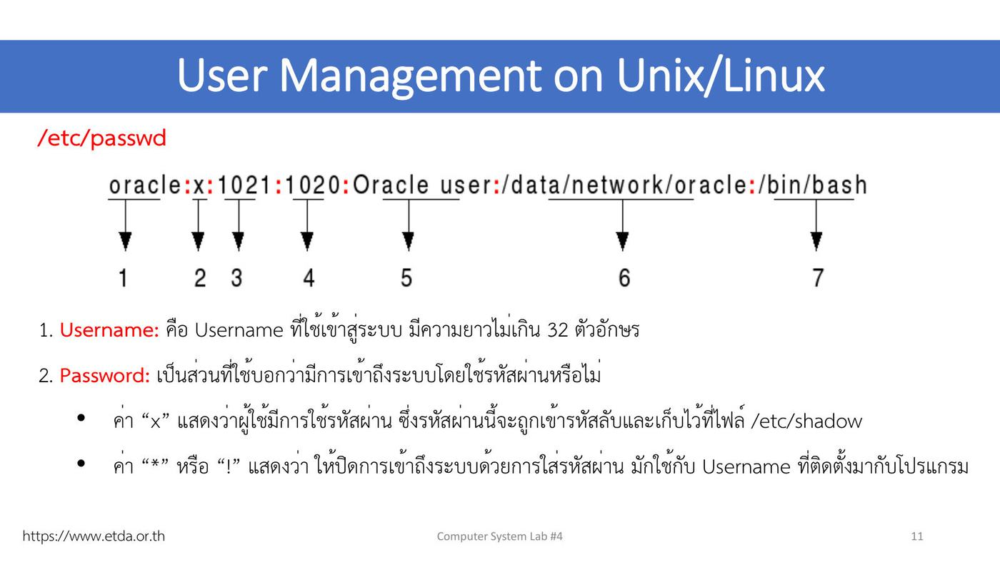

ภาพรวมบทนี้ Linux เป็นระบบ multi-user จึงต้องมีวิธีจัดการว่าใครเป็นใคร อยู่กลุ่มไหน และมีรหัสผ่านอะไร
(1) Lecture 4 อธิบายประเภทผู้ใช้ (User / root) ไฟล์หลัก 3 ไฟล์
/etc/passwd(7 ช่อง),/etc/shadow(8 ช่อง),/etc/group(4 ช่อง) ช่วงเลข UID, ชนิดของ shell และคำสั่งsu,sudo,useradd,passwd,usermod,userdel,groupadd,idพร้อม option(2) Lab 4 อ่านไฟล์ทั้งสามจากเครื่องจริง สร้าง test1/test2 สองแบบ เปลี่ยนรหัส แก้ข้อมูล ลบผู้ใช้ และสร้างกลุ่ม
บทนี้เป็นฐานของ L5 (File Permissions) ที่เอา user/group ไปกำหนดสิทธิ์ไฟล์
ส่วนที่ 1 — Lecture 4: User Management
1. ข้อมูลรายวิชา (ย่อ)
- สัปดาห์ที่ 4 = การฝึกการจัดการผู้ใช้และกลุ่มผู้ใช้ของระบบ (25 August 2026)
- เกณฑ์คะแนนเหมือนเดิม · ส่งแลป 23.59 น. ของวันอังคาร/วันที่เรียน · ทดสอบย่อยทุกสัปดาห์
2. การบริหารจัดการผู้ใช้บนระบบ Unix/Linux
- UNIX ออกแบบให้ใช้งานได้หลายคนในเวลาเดียวกัน (Multi-user) และทำงานหลายอย่างพร้อมกัน (Multitasking)
- จึงนิยมใช้เป็นระบบปฏิบัติการในเครื่อง server
- ผู้ดูแลระบบจึงต้องเข้าใจการบริหารจัดการผู้ใช้และการกำหนดสิทธิ์ เพื่อให้ระบบทำงานมีประสิทธิภาพ
💡 (อธิบายเพิ่ม) เครื่อง server หนึ่งเครื่องอาจมีคนใช้พร้อมกันหลายสิบคน ถ้าไม่แยกผู้ใช้ ทุกคนจะอ่าน แก้ หรือลบไฟล์ของกันและกันได้
3. ประเภทของผู้ใช้
UNIX กำหนดสิทธิ์การเข้าถึงได้หลายระดับ แบ่งผู้ใช้เป็น 2 ระดับ:
| ระดับ | ความหมาย |
|---|---|
| User | ผู้ใช้ทั่วไปสิทธิ์จำกัด หรือ user ที่สร้างไว้ให้โปรแกรมประยุกต์ เช่น Web Server |
| Superuser | บริหารจัดการระบบได้ทุกอย่าง: สร้าง/กำหนดสิทธิ์ผู้ใช้, ปิด process สำคัญ (เช่น Web Server), แก้ไฟล์ระบบ · ชื่อใน UNIX คือ root |
4. การกำหนดค่าให้กับผู้ใช้ ⭐
- ข้อมูลผู้ใช้เก็บใน 3 ไฟล์ที่ใช้ร่วมกัน:
/etc/passwd,/etc/shadow,/etc/group(รูปแบบต่างกัน) - แต่ละไฟล์มีสิทธิ์การเข้าถึงต่างกัน เพราะบางไฟล์เก็บความลับ เช่น รหัสผ่าน
- ผู้ใช้เข้าระบบด้วย Username + รหัสผ่าน
- ระบบระบุตัวผู้ใช้ด้วย UID (User Identifier) — ไม่ซ้ำกัน
- ผู้ใช้เป็นสมาชิกกลุ่มได้ อ้างอิงด้วย GID (Group Identifier)
ดูไฟล์ได้ด้วย:
$ more /etc/passwd
$ sudo more /etc/shadow ← ต้องใช้ sudo
$ more /etc/group
5. /etc/passwd ⭐⭐
- เก็บรายละเอียดผู้ใช้ เช่น UID, GID, home directory
- ผู้ใช้ทุกคนอ่านได้ แต่แก้ได้เฉพาะ root
- 1 บรรทัด = 1 username · ช่องต่าง ๆ คั่นด้วย
:

ตัวอย่าง: oracle:x:1021:1020:Oracle user:/data/network/oracle:/bin/bash
| # | ช่อง | ค่าตัวอย่าง | ความหมาย (จากสไลด์) |
|---|---|---|---|
| 1 | Username | oracle |
ชื่อที่ใช้เข้าระบบ ยาวไม่เกิน 32 ตัวอักษร |
| 2 | Password | x |
x = มีรหัสผ่าน (เข้ารหัสเก็บไว้ที่ /etc/shadow) · * หรือ ! = ปิดการเข้าระบบด้วยรหัสผ่าน มักใช้กับ username ที่ติดตั้งมากับโปรแกรม |
| 3 | User ID (UID) | 1021 |
หมายเลขผู้ใช้ (ดูช่วงเลขด้านล่าง) |
| 4 | Group ID (GID) | 1020 |
หมายเลขกลุ่มที่ผู้ใช้อยู่ (รายละเอียดกลุ่มอยู่ที่ /etc/group) |
| 5 | User ID Info | Oracle user |
รายละเอียดเพิ่ม เช่น ชื่อ-นามสกุล, เบอร์โทร |
| 6 | Home directory | /data/network/oracle |
directory เมื่อผู้ใช้เข้าระบบ ต้องเป็น absolute path (อ้างอิงจาก /) |
| 7 | Command/shell | /bin/bash |
ตำแหน่งโปรแกรม shell ที่รับคำสั่งจากผู้ใช้ ต้องเป็น absolute path |
ตัวอย่างจริง: sudsanguan:x:1000:1000:sudsanguan,,,:/home/sudsanguan:/bin/bash
ช่วงหมายเลข UID ⭐
| UID | ใช้กับ |
|---|---|
| 0 | จองให้ Superuser (root) เท่านั้น |
| 1–99 | จองให้โปรแกรมของระบบ |
| 100–999 | จองให้โปรแกรมที่ผู้ดูแลระบบติดตั้ง |
| 1000 (ขึ้นไป) | ผู้ใช้ทั่วไป |
💡 จึงเห็น
root:x:0:0:…·daemon:x:1:1:…·systemd-network:x:100:…·sudsanguan:x:1000:…· user ที่สร้างเพิ่มได้ 1001, 1002, …
ชนิดของ Command/shell
| Shell | Path |
|---|---|
| Bourne shell | /bin/sh |
| Bourne Again shell | /bin/bash |
| C shell | /bin/csh |
| K shell | /bin/ksh |
ข้อสังเกตจาก more /etc/passwd (สไลด์หน้า 7)
/usr/sbin/nologin= ไม่ให้ login ถ้าพยายาม login จะขึ้น "This account is currently not available" (เห็นใน daemon, bin, sys, games, man, mail ฯลฯ)xในroot:x:0:0:root= บอกว่า root มี password (เก็บใน shadow)sync:x:4:65534:sync:/bin:/bin/sync— shell ไม่ใช่ shell ปกติ (อธิบายเพิ่ม: login แล้วรันคำสั่ง sync แล้วจบ) ·gdm:…:/bin/falseก็ login ไม่ได้เช่นกัน
6. /etc/shadow ⭐⭐
- เก็บรหัสผ่านจริงของผู้ใช้ในรูปเข้ารหัสลับ
- เก็บค่าคุณสมบัติของรหัสผ่าน เช่น วันหมดอายุ
- 1 บรรทัด = 1 username · คั่นด้วย
: - ⭐ อ่าน-เขียนได้เฉพาะ root เพื่อไม่ให้ผู้ใช้เห็นรหัสผ่านของคนอื่น
ตัวอย่าง: vivek:$1$fnfffc$pGteyHdicpGOfffXX4ow#5:13064:0:99999:7:::
| # | ช่อง | ค่าตัวอย่าง | ความหมาย (จากสไลด์) |
|---|---|---|---|
| 1 | Username | vivek |
ยาวไม่เกิน 32 ตัวอักษร |
| 2 | Encrypted Password | $1$fnfffc$pGtey… |
รหัสผ่านจริงที่เข้ารหัสไว้ |
| 3 | Date of last password change | 13064 |
วันที่เปลี่ยนรหัสล่าสุด นับจาก 1 มกราคม ค.ศ. 1970 (UTC) |
| 4 | Minimum password age | 0 |
จำนวนวันน้อยที่สุดก่อนเปลี่ยนรหัสได้ · 0 หรือว่าง = ไม่มีค่าต่ำสุด |
| 5 | Maximum password age | 99999 |
จำนวนวันสูงสุดที่ใช้รหัสได้ · 99999 หรือว่าง = เปลี่ยนเมื่อไรก็ได้ (แทบไม่หมดอายุ) |
| 6 | Password warning period | 7 |
เตือนล่วงหน้ากี่วันก่อนรหัสหมดอายุ (บอกจำนวนวันที่เหลือ) |
| 7 | Password Inactivity Period | ว่าง | ถ้าไม่เปลี่ยนรหัสภายในกี่วัน บัญชีจะถูกปิด |
| 8 | Account expiration date | ว่าง | วันหมดอายุของบัญชี เมื่อถึงกำหนด ปิดผู้ใช้ทันที |
⚠️ ข้อควรระวังในสไลด์: สไลด์เขียนว่าช่อง 3 เป็น "UNIX timestamp (จำนวนวินาทีตั้งแต่ 1 ม.ค. 1970)" แต่ค่าในไฟล์ shadow จริงเป็นจำนวนวัน (อธิบายเพิ่ม) เช่น
18374วัน = 22 เมษายน 2020 ถ้าเป็นวินาทีจะยังไม่ถึงวันที่ 2 ม.ค. 1970⭐ เทคนิค: ถ้าไม่อยากให้ผู้ใช้เปลี่ยนรหัสผ่านเองได้ → ตั้ง Maximum ให้น้อยกว่า Minimum
UTC Time (GMT) — สไลด์โชว์ worldtimebuddy: Bangkok = UTC+7 (UTC 10:17 am = Bangkok 5:17 pm)
ความหมายของ * และ ! ในช่องรหัสผ่าน
*= ไม่มีรหัสในการเข้าถึง user นี้ (เช่นdaemon:*:19101:…)!= user นี้ถูก locked ไว้ ไม่ให้เข้าถึง (เช่นroot:!:19654:…)
💡 (อธิบายเพิ่ม) Ubuntu ล็อก root ไว้ (
!) ตั้งแต่ติดตั้ง จึง login เป็น root ตรง ๆ ไม่ได้ ต้องใช้sudoแทน · ขึ้นต้นรหัส$1$= MD5,$6$= SHA-512,$y$= yescrypt (Ubuntu รุ่นใหม่)
การดู /etc/shadow
$ sudo cat /etc/shadow
$ sudo more /etc/shadow
$ more /etc/shadow
more: cannot open /etc/shadow: Permission denied ← ไม่มี sudo
sudo(superuser do) = คำสั่งที่ทำให้ได้สิทธิ์เท่ากับ root
7. /etc/group ⭐
- กำหนดคุณสมบัติและสมาชิกของแต่ละกลุ่ม
- ผู้ใช้อ่านได้อย่างเดียว แก้ได้เฉพาะ root
- ในระบบใหญ่ควรสร้างกลุ่มเพื่อจัดการสิทธิ์ง่ายขึ้น เช่น ให้กลุ่ม A แก้ไฟล์ได้เฉพาะบาง directory
ตัวอย่าง: etda:x:1000:test01,test02,test03
| # | ช่อง | ค่า | ความหมาย |
|---|---|---|---|
| 1 | Group Name | etda |
ชื่อกลุ่ม |
| 2 | Password | x |
ต้องใช้รหัสผ่านเข้ากลุ่มไหม · x = มีรหัส (เข้ารหัสเก็บแยก) · ว่าง = ไม่กำหนด |
| 3 | Group ID (GID) | 1000 |
หมายเลขกลุ่ม |
| 4 | User List | test01,test02,test03 |
สมาชิก คั่นด้วย , |
⚠️ สไลด์เขียนว่ารหัสกลุ่มเก็บที่
/etc/shadow(อธิบายเพิ่ม: ในระบบจริงรหัสกลุ่มเก็บที่/etc/gshadow)
ตัวอย่างจากเครื่อง: adm:x:4:syslog,sudsanguan · sudsanguan:x:1000: (ไม่มีสมาชิกเสริม) · sambashare:x:135:sudsanguan · nagios:x:999:www-data
8. su และ sudo ⭐
ผู้ใช้ทั่วไปใช้สิทธิ์ root ได้ผ่าน su และ sudo
| คำสั่ง | ย่อมาจาก | ทำอะไร | ตัวอย่าง |
|---|---|---|---|
su |
Substitute User | เปลี่ยนไปเป็นอีก user หนึ่ง | su test1 → ใส่รหัสของ test1 → whoami ได้ test1 |
sudo |
Super user do | รันคำสั่งเสมือน root เป็นผู้ใช้คำสั่ง | sudo useradd test3 |
ตัวอย่าง sudo ในสไลด์:
$ useradd test3
useradd: Permission denied.
useradd: cannot lock /etc/passwd; try again later.
$ sudo useradd test3
[sudo] password for sudsanguan: ← ใส่รหัสของตัวเอง
$ userdel test3
userdel: Permission denied.
$ sudo userdel test3 ← สำเร็จ
⭐ คำสั่งที่แก้ไฟล์
/etc/passwd,/etc/groupต้องมีsudoเสมอ ไม่อย่างนั้นขึ้นPermission denied/cannot lock /etc/passwd
9. คำสั่งจัดการผู้ใช้และกลุ่ม ⭐⭐
คำสั่งพื้นฐาน: เพิ่มผู้ใช้ (useradd) · แก้ไขผู้ใช้ (usermod) · ลบผู้ใช้ (userdel)
9.1 useradd — เพิ่มผู้ใช้
useradd [-u UID] [-g GID] [-d HOME_DIR] [-s SHELL] [-m] [-c COMMENT] USER_NAME
| Option | ความหมาย |
|---|---|
-u UID |
กำหนดหมายเลข UID |
-g GID |
กำหนด GID หรือชื่อกลุ่ม |
-d HOME_DIR |
กำหนด home directory |
-s SHELL |
กำหนดโปรแกรม shell |
-m |
สร้าง home directory หากยังไม่มี |
-c COMMENT |
ข้อความรายละเอียดเพิ่ม (ช่อง User ID Info) |
USER_NAME |
ชื่อที่ใช้เข้าระบบ |
ตัวอย่างในสไลด์:
# sudo useradd -u 777 -g test -d /home/test -s /bin/sh -m -c Sudsanguan test1
# useradd -u 777 -g test -d /home/test1 -s /bin/sh -m -c somsak test1
# sudo useradd -d /home/test1 -s /bin/bash -m test1
สไลด์ให้ลอง
useradd test1โดยไม่กำหนดค่าใด ๆ แล้วดูผลใน/etc/passwd,/etc/group→ ดูเฉลยใน Lab หน้า 14
9.2 passwd — กำหนด/เปลี่ยนรหัสผ่าน
# passwd test1
Enter new UNIX password:
Retype new UNIX password:
passwd: password updated successfully
- ระบบให้ใส่รหัสใหม่ 2 ครั้ง ถ้าตรงกันจึงบันทึก
9.3 usermod — แก้ไขข้อมูลผู้ใช้
usermod [-u UID] [-g GID] [-d HOME_DIR] [-s SHELL] [-m] [-c COMMENT] [-e EXPIRE_DATE] USER_NAME
option เหมือน useradd และเพิ่ม:
| Option | ความหมาย |
|---|---|
-e EXPIRE_DATE |
วันหมดอายุของผู้ใช้ รูปแบบ YYYY-MM-DD |
-L |
ปิดการใช้งาน (Lock) ผู้ใช้ |
-U |
เปิดการใช้งาน (Unlock) ผู้ใช้ |
ตัวอย่าง:
# sudo usermod -d /home/test02 test1 ← เปลี่ยน home directory
# sudo usermod -c "Mr.test test02" test1 ← เปลี่ยนชื่อ/รายละเอียด
9.4 userdel — ลบผู้ใช้
# userdel test1
(อธิบายเพิ่ม: userdel -r test1 ลบ home directory ด้วย)
9.5 groupadd — สร้างกลุ่ม
groupadd [-g GID] GROUP_NAME
# groupadd -g 1000 etda
9.6 id — แสดงรายละเอียดผู้ใช้
$ id jezt
uid=1000(jezt) gid=1000(jezt) groups=1000(jezt),4(adm),20(dialout),24(cdrom),33(www-data),46(plugdev),112(lpadmin),120(admin),122(sambashare)
- แสดง username, UID, GID และทุกกลุ่มที่เป็นสมาชิก
10. File Information (ทบทวน)
ls -l → -rw-r--r-- 1 ittipon muict 68524 2011-12-19 07:18 foo.txt = File type and Permissions / link count / Owner / Group / Size (bytes) / Modification Time/Date / File Name (เรื่อง owner/group จะใช้ต่อใน L5)
ส่วนที่ 2 — Lab 4: User Management
11. วัตถุประสงค์ สิ่งที่ส่ง และคำสั่ง
Objectives: 1. Study Linux User Management · 2. Practice Linux commands for user management
What to Submit: แคปทุกคำสั่ง พร้อมอธิบายผลแต่ละคำสั่ง รวม PDF ส่ง MyCourses ชื่อ 6887xxx_lab4.pdf · ⚠️ ส่ง Tuesday, August 25 ก่อนเที่ยงคืน
คำสั่งที่ใช้: useradd, usermod, userdel, passwd, su, sudo, groupadd, id
12. Lab 4: เฉลยช่องว่างทีละหน้า
คำตอบอ่านจาก screenshot ในสไลด์ (เครื่องของอาจารย์ user
sudsanguan) ข้อที่ให้ "capture จากเครื่องของตนเอง" ตอนส่งต้องใช้ค่าจากเครื่องตัวเอง
หน้า 5–6 — List of users
$ more /etc/passwd
root:x:0:0:root:/root:/bin/bash
daemon:x:1:1:daemon:/usr/sbin:/usr/sbin/nologin
...
gdm:x:121:125:Gnome Display Manager:/var/lib/gdm3:/bin/false
sudsanguan:x:1000:1000:sudsanguan,,,:/home/sudsanguan:/bin/bash
| คำถาม | คำตอบ |
|---|---|
| คำสั่งที่ใช้ | more /etc/passwd |
| ไฟล์ที่อ่าน | /etc/passwd |
| UID ของ root | 0 |
| GID ของ sudsanguan | 1000 |
หน้า 7 — Exercise: อ่านค่าของ user ตัวเองใน /etc/passwd
ตัวอย่างจากบรรทัด sudsanguan:x:1000:1000:sudsanguan,,,:/home/sudsanguan:/bin/bash
| ช่อง | ค่า |
|---|---|
| Username | sudsanguan |
| Password | x (มีรหัส เก็บใน /etc/shadow) |
| UID | 1000 |
| GID | 1000 |
| User ID info | sudsanguan,,, (ชื่อ และช่องว่างสำหรับห้อง/เบอร์โทร) |
| Home directory | /home/sudsanguan |
| Command/Shell | /bin/bash |
หน้า 8 — /etc/shadow
$ sudo more /etc/shadow
root:!:18374:0:99999:7:::
sudsanguan:$6$3ZRG5naN$eLo8R6Fzito.jq269Rg1thyEDiJbsZdCvOSqyc7Lc33RXzS.xnFOlBgmMcem23CuXj5pz/F7Bhi8QRTVGo31E0:18415:0:99999:7:::
| คำถาม | คำตอบ |
|---|---|
| รหัสผ่านที่เข้ารหัสแล้วของ user ตนเอง | ช่องที่ 2 ของบรรทัดตัวเอง เช่น $6$3ZRG5naN$eLo8R6…E0 ($6$ = SHA-512) |
| ตัวเลข 18374 สำหรับ root | Date of last password change = วันที่เปลี่ยนรหัสล่าสุด นับเป็นจำนวนวันตั้งแต่ 1 ม.ค. 1970 (18374 วัน ≈ 22 เม.ย. 2020) |
💡 ช่องรหัสของ root เป็น
!= root ถูก lock ใช้sudoแทน
หน้า 9 — Exercise: อ่านค่าของ user ตัวเองใน /etc/shadow
ตัวอย่างจากบรรทัด sudsanguan: Username = sudsanguan · Encrypted Password = $6$3ZRG…E0 · Date of last password change = 18415 · Minimum password age = 0 · Maximum password age = 99999
หน้า 10–12 — /etc/group และ id
| คำถาม | คำตอบ |
|---|---|
GID สำหรับ root (root:x:0:) |
0 |
GID สำหรับ Sudsanguan (sudsanguan:x:1000:) |
1000 |
| จำนวนกลุ่มที่ Sudsanguan เป็นสมาชิก | 9 กลุ่ม |
จาก id sudsanguan:
uid=1000(sudsanguan) gid=1000(sudsanguan) groups=1000(sudsanguan),4(adm),24(cdrom),27(sudo),30(dip),46(plugdev),116(lpadmin),126(sambashare),999(vboxsf)
→ sudsanguan, adm, cdrom, sudo, dip, plugdev, lpadmin, sambashare, vboxsf = 9
💡 (อธิบายเพิ่ม) การที่อยู่กลุ่ม
sudoคือเหตุผลที่ user นี้ใช้คำสั่งsudoได้ · ใน/etc/groupจะเห็นชื่อ sudsanguan ในช่องสมาชิกของกลุ่มเหล่านี้ เช่นlpadmin:x:116:sudsanguan
หน้า 13 — Exercise: /etc/group ของตัวเอง
ตอบจากเครื่องตัวเอง: GID ของ username ตัวเอง (ปกติ 1000 ถ้าเป็น user แรกที่สร้างตอนติดตั้ง) และจำนวนกลุ่มที่เป็นสมาชิก (ใช้ id ชื่อตัวเอง หรือ groups นับได้ง่าย)
หน้า 14 — เพิ่มผู้ใช้คนที่ 1 (ไม่ใส่ option)
$ useradd test1
useradd: Permission denied.
useradd: cannot lock /etc/passwd; try again later.
$ sudo useradd test1
$ cat /etc/passwd
test1:x:1001:1001::/home/test1:/bin/sh
- UID ของ test1 = 1001 · shell =
/bin/sh - (อธิบายเพิ่ม)
useraddแบบไม่ใส่ option ใช้ค่าเริ่มต้น: UID ถัดไป (1001), สร้างกลุ่มชื่อเดียวกัน GID 1001, home เป็น/home/test1แต่ไม่สร้าง directory จริง (เพราะไม่มี-m), shell เป็น/bin/sh, ช่อง info ว่าง
หน้า 15 — เพิ่มผู้ใช้คนที่ 2 (ใส่ option)
$ sudo useradd test2 -u 2000 -d /home/test2 -s /bin/bash
test2:x:2000:2000::/home/test2:/bin/bash
- UID ของ test2 = 2000 · shell =
/bin/bash - กลุ่มของ test2 ได้ GID 2000 ตาม UID
หน้า 16 — แก้ไข password ผู้ใช้
$ sudo passwd test1
Enter new UNIX password:
Retype new UNIX password:
passwd: password updated successfully
หน้า 17 — Exercise: สร้าง test1, test2 ทั้งสองแบบ
| test1 | test2 | |
|---|---|---|
| UID | 1001 | 2000 |
| GID | 1001 | 2000 |
| จำนวนกลุ่มที่เป็นสมาชิก | 1 กลุ่ม: test1 |
1 กลุ่ม: test2 |
ตรวจด้วย
id test1และid test2(แนวคำตอบ) · ภาพประกอบในสไลด์เป็นเมนูมุมขวาบน (Switch User / Log Out / Account Settings) สำหรับทดลองสลับผู้ใช้ผ่านหน้าจอ
หน้า 18 — Exercise: เปลี่ยนรหัส test1 และทดสอบ login
sudsanguan@…:/home$ whoami → sudsanguan
sudsanguan@…:/home$ su test1 → Password: (รหัสของ test1)
test1@…:/home$ whoami → test1
test1@…:/home$ pwd → /home
test1@…:/home$ cd test1
test1@…:~$ pwd → /home/test1
test1@…:~$ cd ..
test1@…:/home$ cd sudsanguan
test1@…:/home/sudsanguan$ ls → Desktop Documents Downloads examples.desktop foo Music ...
su test1แล้วยังอยู่ directory เดิม (/home) ·~ของ test1 คือ/home/test1- test1 เข้าไปดูไฟล์ใน home ของ sudsanguan ได้ เพราะ directory นั้นเปิดสิทธิ์ให้คนอื่นอ่านได้ (
drwxr-xr-x) — เรื่องนี้ต่อยอดใน L5
⚠️ (อธิบายเพิ่ม) ในภาพ
cd test1ได้ แสดงว่ามี/home/test1อยู่แล้ว (อาจสร้างไว้ก่อนด้วย-mหรือสร้างเพิ่ม) ถ้าสร้างด้วยuseradd test1เฉย ๆ จะcdไม่ได้ — ดูหน้า 21
หน้า 19 — แก้ไขข้อมูลผู้ใช้
$ sudo usermod test1 -c "Dr. Thitinan"
test1:x:1001:1001:Dr. Thitinan:/home/test1:/bin/sh
- ชื่อใหม่ของผู้ใช้ test1 คือ "Dr. Thitinan" (ช่อง User ID Info เปลี่ยน)
หน้า 20 — ลบผู้ใช้
$ sudo userdel test2
- ผู้ใช้ที่ถูกลบออก คือ test2 (บรรทัด test2 หายจาก
/etc/passwdเหลือ test1)
หน้า 22 — เพิ่มกลุ่มผู้ใช้ (Exercise)
$ groupadd -g 2000 testing
groupadd: Permission denied.
groupadd: cannot lock /etc/group; try again later.
$ sudo groupadd -g 2000 testing
testing:x:2000:
- กลุ่มที่สร้างใหม่ชื่อ
testing· GID = 2000
💡 สร้าง GID 2000 ได้เพราะ test2 (ที่เคยมีกลุ่ม GID 2000) ถูกลบไปแล้ว
13. Lab 4: Exercise หน้า 21 (แนวคำตอบ)
โจทย์: แก้ไขชื่อของ test1 และ test2 ตามตัวอย่าง · ทดสอบว่า home directory ของ test1 และ test2 ถูกสร้างหรือไม่ · ถ้าไม่ได้ต้องทำอย่างไร
- แก้ชื่อ:
sudo usermod -c "ชื่อใหม่" test1และsudo usermod -c "ชื่อใหม่" test2 - ตรวจ home:
ls /homeหรือls -ld /home/test1 /home/test2 - ผลที่คาด: ทั้งคู่สร้างโดยไม่มี
-mถ้าระบบไม่ได้ตั้งค่าให้สร้างอัตโนมัติ จะไม่มี directory/home/test1,/home/test2(ขึ้นNo such file or directory/suแล้วเข้า home ไม่ได้) - วิธีแก้ (เลือกอย่างใดอย่างหนึ่ง):
- สร้างเองแล้วโอนให้เป็นของผู้ใช้:
sudo mkdir /home/test1 sudo chown test1:test1 /home/test1 - ลบแล้วสร้างใหม่พร้อม
-m:sudo userdel test1แล้วsudo useradd -m -s /bin/bash test1
- สร้างเองแล้วโอนให้เป็นของผู้ใช้:
คำศัพท์สำคัญ
| คำศัพท์ | ความหมาย | จำง่าย ๆ ว่า |
|---|---|---|
| Multi-user / Multitasking | หลายคนใช้พร้อมกัน / หลายงานพร้อมกัน | เหมาะกับ server |
| User / Superuser (root) | ผู้ใช้ทั่วไป / ผู้ดูแลที่ทำได้ทุกอย่าง | คนทั่วไป / เจ้าของบ้าน |
| UID / GID | หมายเลขผู้ใช้ / หมายเลขกลุ่ม | เลขประจำตัว |
/etc/passwd |
7 ช่อง: username, x, UID, GID, info, home, shell | สมุดรายชื่อ |
/etc/shadow |
8 ช่อง: username, encrypted pw, last change, min, max, warn, inactive, expire | ตู้เซฟรหัส |
/etc/group |
4 ช่อง: name, password, GID, user list | ทะเบียนกลุ่ม |
x / * / ! |
มีรหัส (เก็บ shadow) / ไม่มีรหัส / ถูก lock | มี / ไม่มี / ล็อก |
/usr/sbin/nologin |
shell ที่ไม่ให้ login ("This account is currently not available") | ห้ามเข้า |
| sh / bash / csh / ksh | Bourne / Bourne Again / C / K shell | ตระกูล shell |
su |
Substitute User — สลับเป็น user อื่น | เปลี่ยนตัว |
sudo |
Super user do — รันคำสั่งด้วยสิทธิ์ root | ยืมสิทธิ์ |
useradd |
เพิ่มผู้ใช้ (-u -g -d -s -m -c) |
add |
passwd |
ตั้ง/เปลี่ยนรหัส (ใส่ 2 ครั้ง) | ตั้งรหัส |
usermod |
แก้ผู้ใช้ (+ -e หมดอายุ, -L lock, -U unlock) |
modify |
userdel |
ลบผู้ใช้ | delete |
groupadd |
สร้างกลุ่ม (-g GID) |
สร้างกลุ่ม |
id |
แสดง uid, gid, groups | บัตรประชาชน |
| UTC | เวลาสากล · Bangkok = UTC+7 | เวลากลาง |
สรุปท้ายบท / จุดที่มักออกสอบ
เรื่องที่ต้องจำ
- UNIX = Multi-user + Multitasking → นิยมใช้บน server
- ผู้ใช้ 2 ระดับ: User / Superuser = root
/etc/passwd7 ช่อง · username ≤ 32 ตัวอักษร · home และ shell ต้องเป็น absolute path- UID: 0 = root · 1–99 = ระบบ · 100–999 = โปรแกรมที่ admin ติดตั้ง · 1000+ = ผู้ใช้ทั่วไป
- Shell:
/bin/sh(Bourne),/bin/bash(Bourne Again),/bin/csh(C),/bin/ksh(K) /etc/shadow8 ช่อง · อ่าน-เขียนเฉพาะ root · ต้องsudo·*= ไม่มีรหัส,!= locked- max < min = ผู้ใช้เปลี่ยนรหัสเองไม่ได้ · 99999 = ไม่หมดอายุ
/etc/group4 ช่อง · อ่านได้ แก้เฉพาะ rootuseraddoption: -u UID, -g GID, -d HOME, -s SHELL, -m สร้าง home, -c COMMENTusermodเพิ่ม -e YYYY-MM-DD, -L lock, -U unlock- Lab: root UID = 0, GID = 0 · sudsanguan UID/GID = 1000, อยู่ 9 กลุ่ม · test1 = 1001
/bin/sh· test2 = 2000/bin/bash· usermod -c → "Dr. Thitinan" · ลบ test2 · กลุ่มใหม่ testing GID 2000 - ส่งแลป
6887xxx_lab4.pdf
คู่ที่มักสับสน
| คู่ | ต่างกันที่ |
|---|---|
/etc/passwd vs /etc/shadow |
7 ช่อง ใครก็อ่านได้ vs 8 ช่อง รหัสเข้ารหัส อ่านได้เฉพาะ root |
x vs * vs ! |
มีรหัส (อยู่ shadow) vs ไม่มีรหัส vs ถูก lock |
su vs sudo |
กลายเป็น user อื่น (ใช้รหัสคนนั้น) vs รันคำสั่งเดียวแบบ root (ใช้รหัสตัวเอง) |
useradd test1 vs useradd -m -s /bin/bash test1 |
ค่าเริ่มต้น: ไม่สร้าง home, shell /bin/sh vs สร้าง home, shell bash |
useradd vs usermod |
สร้างใหม่ vs แก้ของเดิม (และมี -e, -L, -U) |
| Minimum vs Maximum password age | ต้องรอกี่วันถึงเปลี่ยนได้ vs ใช้ได้นานสุดกี่วัน |
| Inactivity period vs Account expiration | ไม่เปลี่ยนรหัสนานเกินจะถูกปิด vs ถึงวันที่กำหนดถูกปิดทันที |
/bin/sh vs /bin/bash |
Bourne shell vs Bourne Again shell (ความสามารถมากกว่า) |
id vs groups vs whoami |
uid+gid+กลุ่มทั้งหมด vs เฉพาะกลุ่ม vs เฉพาะชื่อ |
แนวคิดที่ต้องอธิบายได้
- ทำไม
useradd test1ไม่มี sudo แล้ว error → ต้องเขียน/etc/passwdซึ่งแก้ได้เฉพาะ root ("cannot lock /etc/passwd") - ทำไม user ระบบหลายตัวใช้
/usr/sbin/nologin→ เป็นบัญชีของโปรแกรม ไม่ได้มีไว้ให้คน login จึงปิดเพื่อความปลอดภัย - ทำไม root ใน Ubuntu เป็น
!→ ล็อกไว้ไม่ให้ login ตรง บังคับให้ใช้ sudo ซึ่งตรวจสอบและบันทึกได้ว่าใครทำอะไร - ทำไม home ของ test1 อาจไม่มีหลัง
useradd→ ไม่ได้ใส่-mต้องสร้างเองหรือสร้าง user ใหม่พร้อม-m